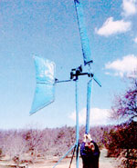
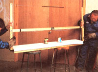
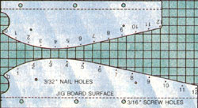

We put a little "backbone" between the blade skins and made a good thing even better.
Those readers interested in small-scale alternative energy projects have no doubt seen the 350-watt homebuilt windplant we featured in issue 93. In an effort to develop that machine further, we've been experimenting with a few modifications . . . and can now report on an improvement we've made to the blades detailed in the article.
We initially went with double-skinned sailwing blades because they're lighter and easier to fabricate than carved wood or internally supported aluminum wings . . . and they still offer an acceptable degree of efficiency. But-as we discovered when faced with a spell of very breezy weather-wind velocities of 25 miles per hour or so (the range of maximum power output) produced an undesirable fabric flutter in the skins, partly as a result of the blade tips "ballooning" under the force of high RPMs, and in some measure because the blades were reacting to sudden gusts by adjusting their pitch for slowdown.
Our solution was merely to take the slack out of the blade covering, not by stretching it tighter, but by stuffing each hollow wing with a carefully cut section of expanded polystyrene insulation board. This not only gave each blade more integrity (while exacting only a 9-ounce weight penalty) but, more important, provided the airfoil with a definite shape, one calculated to improve aerodynamic lift.
The equipment used to make the modification was, for the most part, homemade. After we'd rescued a 3" X 36" X 72" piece of polystyrene beadboard, left over from one of our car body-building projects, and cut it into three 3" X 11-7/8" X 69-1/4" sections on the table saw, all we needed was a bench jig and a large hot-wire cutter to complete the job.
The jig was simply a 69-1/4" length of 2 X 8 with .040"-thick sheet-aluminum templates fastened to the ends . . . each drilled and marked, with stations set 3/4" apart on the shorter piece, and 1" apart on the longer one (see our diagram for details).
The hot-wire cutter, on the other hand, looks like a huge bucksaw but works like a cheese cutter . . . except for the fact that its stainlesssteel wire is actually a resistive element heated with a variable transformer. We made the cutter frame from one 73" and two 32" lengths of 1 X 2, two 1/4" X 2-1/2" carriage bolts, some baling wire, a 1/2" X 18" screen-door spring, two No. 8 X 3/4" eye screws, and a 15' length of 16gauge household electrical cord.
With the frame assembled, it takes about 8' of .040" stainless wire-stretched through slots cut into the ends of the wooden arms-to reach from one eye screw to its opposite mate. The cutting wire is wrapped to itself at the eyes, and one 16-gauge conductor is similarly connected to each wrapped joint to complete the circuit. Under no circumstances should the plug be inserted directly into a wall socket . . . the tool must be fed through a 5-amp transformer that delivers no more than 15% or 20% of standard (110 VAC) household voltage. (We used a variable model-a Powerstat 21-that's manufactured by the Superior Electrical Company, 97 Lee Ave., Bristol, CT 06010.)
To make the inserts, we just laid the jig on some stools and slid a polystyrene billet between the templates . . . assuring accuracy by aligning the front of the blank with the templates' flat noses, locking it in place with two box nails pushed into the ends, and weighting it down with two nail cans.
With the current on (we wore protective gloves because the exposed conductor does give a tingle if it's touched), each person must start at the bottom of the indentation just behind one template's flat leading edge and run the hot wire toward the rear, or trailing edge, maintaining the same rate of feed as his or her partner by using the numbered stations as guides. When all three sections are cut, they can be set against the exposed blade frames, marked, then trimmed with a bread knife at the corner tips so they'll fit, within the conduit-and-cable perimeters.
It's important, during this step, that the wider end of the insert be placed against the blade mount, and that the flat, uncut polystyrene surface be forward, toward the face of the blade, so oncoming wind strikes it first.
Once they were set in place, it was a simple matter to pull the sleeves over the stuffed frames and reclamp them to the mounts.
This inexpensive modification did a lot to quiet blade noise at higher rotor velocities and improved upper-end performance as well. We did have to adjust our governor weight values slightly, but they will vary with every plant and site. In the weeks to come, we'll continue to look for improvements, this time evaluating line-loss reductions by increasing the size of the conductors. You can be sure that if we have anything of value to report, you'll see it here in MOTHER'S pages!
EDITOR'S NOTE: A complete set of step-by-step building plans for the Blue Max a available at a cost of $10.00-plus $1.00 to cover shipping and handling-from Mother's Plans, Blue Max Windplant, P.O. Box 70, Hendersonville, NC 28793. And don't pass up the chance to win cash in the Blue Max Contest. If you can build your own windplant based on our design and keep your costs below those of anyone else who enters, you'll be $200 richer! a Send to the address above for contest details and an entry blank.
|
 STAFF PHOTOS |
 |
 |